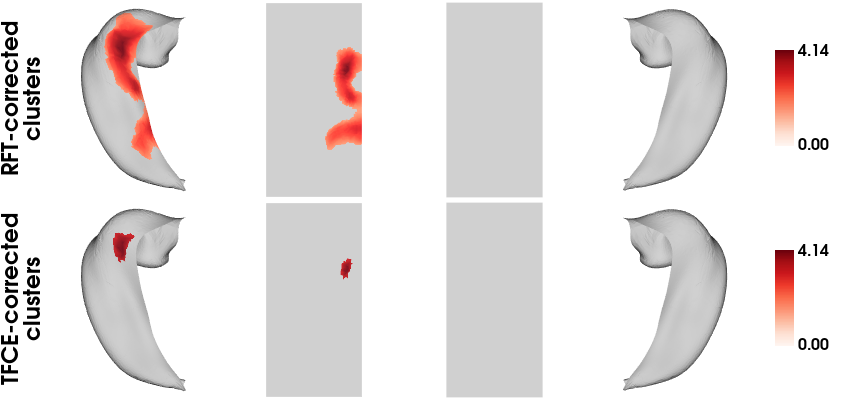
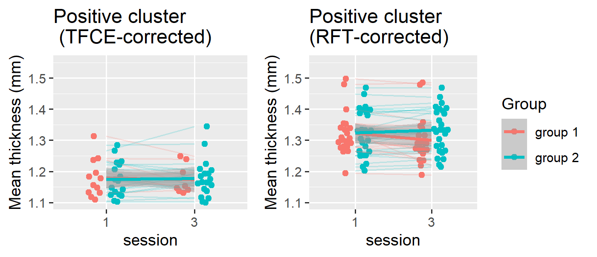

Example analyses with VertexWiseR - Example 2
Charly Billaud, Junhong Yu
2025-03-25
VertexWiseR_Example_2.RmdExample 2: Mixed effect model of intervention-related changes on hippocampal thickness
Note: This is the most up-to-date demo. Its version published in Imaging Neuroscience (2024) 2: 1–14 no longer applies since the v1.3.0 fixes made to the TFCE_vertex_analysis_mixed() function (see our updates page for details).
The first stage of the analysis assumes that a preprocessed Hippunfold subjects directory is present. Likewise, this code makes use of an already-extracted hippocampal thickness dataset made available on the VertexWiseR git repository.
The following code is the script which was used to produce this demo data with the Fink dataset (Fink et al. 2021):
#HIPvextract(sdirpath = hippunfold_SUBJECTS_DIR, filename = "FINK_Tv", measure = "thickness", subj_ID = T)The hippocampal surface can be loaded from the online VertexWiseR git repository.
To load the thickness matrix:
FINK_Tv_ses13 = readRDS(file = url("https://github.com/CogBrainHealthLab/VertexWiseR/blob/main/inst/demo_data/FINK_Tv_ses13.rds?raw=TRUE"))To smooth the surface data:
FINK_Tv_smoothed_ses13 = smooth_surf(FINK_Tv_ses13, 5)The FINK behavioural data (FINK_behdata_ses13.csv) can be loaded from the VertexWiseR package internal data. It contains one row per participant, for scanning sessions 1 and 3.
dat_beh_ses13 = readRDS(system.file(package='VertexWiseR', "/demo_data/FINK_behdata_ses13.rds"))Here, we are interested in the interaction between session number (time) and group. To run the vertex-wise mixed model analysis with random field theory-based cluster correction, testing for the effect of session, group, session * group interaction, on hippocampal thickness, with subject ID as a random variable:
model2_RFT=RFT_vertex_analysis(
model = dat_beh_ses13[,c("session","group","session_x_group")],
contrast = dat_beh_ses13[,"session_x_group"],
surf_data=FINK_Tv_smoothed_ses13,
random=dat_beh_ses13[,"participant_id"], p=0.05)
model2_RFT$cluster_level_results## $`Positive contrast`
## clusid nverts P X Y Z tstat region
## 1 1 974 0.041 -13.3 27.5 1.3 4.14 L Subiculum
##
## $`Negative contrast`
## [1] "No significant clusters"To run the vertex-wise mixed model analysis with threshold-free cluster enhancement-based cluster correction, with 1000 permutations, testing for the effect of session, group, session * group interaction, on hippocampal thickness, with subject ID as a random variable:
set.seed(123)
model2_TFCE=TFCE_vertex_analysis_mixed(
model = dat_beh_ses13[,c("session","group","session_x_group")],
contrast = dat_beh_ses13[,"session_x_group"],
surf_data= FINK_Tv_smoothed_ses13,
nperm=1000,
random = dat_beh_ses13[,"participant_id"],
perm_type="within_between",
nthread=1)
TFCEoutput = TFCE_threshold(model2_TFCE, p=0.05)
TFCEoutput$cluster_level_results## $`Positive contrast`
## clusid nverts P X Y Z tstat region
## 1 1 73 0.033 -27.5 27.5 1.3 4.14 L Subiculum
##
## $`Negative contrasts`
## [1] "No significant clusters"To plot the significant clusters from both models on the CITI168 hippocampal template surface:
tmaps = rbind(model2_RFT$thresholded_tstat_map, TFCEoutput$thresholded_tstat_map)
plot_surf(surf_data = tmaps,
filename = 'FINK_tstatmaps.png',
title=c('RFT-corrected\nclusters','TFCE-corrected\nclusters'),
cmap='Reds',
show.plot.window=FALSE)
Example 2 follow-up: plotting and post-hoc analyses of hippocampal clusters across regression models
The code below was used in R (v.4.3.3) to plot the cluster-wise values from the RFT and TFCE corrected analyses and validate them with additional mixed linear models.
We produce a figure displaying the thickness of the hippocampal clusters in relation to the group and session variables, in RFT and TFCE models, demonstrating a steeper curve toward group 2:
#We divide the cluster values by their sum to get the average thickness per vertex
dat_beh_ses13$clustCTTFCE=(FINK_Tv_smoothed_ses13 %*% TFCEoutput$pos_mask)/sum(TFCEoutput$pos_mask>0)
dat_beh_ses13$clustRFT=(FINK_Tv_smoothed_ses13 %*% model2_RFT$pos_mask)/sum(model2_RFT$pos_mask>0)
library(ggplot2)
library(ggbeeswarm)
library(cowplot)
a=ggplot(data=dat_beh_ses13,aes(y=clustCTTFCE,x=as.factor(session), color=as.factor(group)))+
geom_quasirandom(dodge.width=0.5)+
geom_line(aes(group=participant_id), alpha=0.2)+
geom_smooth(aes(group=group), method="lm")+
labs(y="Mean thickness (mm)", x="session", color="group")+
guides(colour = "none")+
ggtitle("Positive cluster\n (TFCE-corrected)")+
ylim(1.1, 1.55)
b=ggplot(data=dat_beh_ses13,aes(y=clustRFT,x=as.factor(session), color=as.factor(group)))+
geom_quasirandom(dodge.width=0.5)+
geom_line(aes(group=participant_id), alpha=0.2)+
geom_smooth(aes(group=group), method="lm")+
labs(y="Mean thickness (mm)", x="session", color="group")+
ggtitle("Positive cluster\n(RFT-corrected)")+
scale_color_discrete(name="Group",labels=c("group 1", "group 2"))+
ylim(1.1, 1.55)
png(filename="traj.png", res=300, width=2500,height=1080)
plots=plot_grid(a,b, nrow=1,rel_widths=c(0.3,0.40))
print(plots)
dev.off()
As an additional validation of these results, these significant clusters were extracted as regions-of-interests and fitted in a linear mixed effects model using another R package— lmerTest (Kuznetsova, Brockhoff, and Christensen 2017).
Linear mixed effect testing the effect of session, group, and session * group interaction on the positive RFT clusters’ average thickness value
lme.RFT=lmer(clustRFT~session+group+session*group+(1|participant_id),data =dat_beh_ses13 )
summary(lme.RFT)## Linear mixed model fit by REML. t-tests use Satterthwaite's method [
## lmerModLmerTest]
## Formula: clustRFT ~ session + group + session * group + (1 | participant_id)
## Data: dat_beh_ses13
##
## REML criterion at convergence: -317.1
##
## Scaled residuals:
## Min 1Q Median 3Q Max
## -2.69862 -0.43221 -0.04002 0.42291 2.57082
##
## Random effects:
## Groups Name Variance Std.Dev.
## participant_id (Intercept) 0.004837 0.06955
## Residual 0.000236 0.01536
## Number of obs: 96, groups: participant_id, 48
##
## Fixed effects:
## Estimate Std. Error df t value Pr(>|t|)
## (Intercept) 1.326760 0.010717 54.685962 123.801 < 2e-16 ***
## session -0.003450 0.001580 46.000000 -2.183 0.0342 *
## group -0.006877 0.010717 54.685962 -0.642 0.5237
## session:group 0.007645 0.001580 46.000000 4.837 1.51e-05 ***
## ---
## Signif. codes: 0 '***' 0.001 '**' 0.01 '*' 0.05 '.' 0.1 ' ' 1
##
## Correlation of Fixed Effects:
## (Intr) sessin group
## session -0.295
## group -0.125 0.037
## session:grp 0.037 -0.125 -0.295Linear mixed effect testing the effect of session, group, and session * group interaction on the positive TFCE clusters’ average thickness value
lme.posTFCE=lmer(clustCTTFCE~session+group+session*group+(1|participant_id),data =dat_beh_ses13 )
summary(lme.posTFCE)## Linear mixed model fit by REML. t-tests use Satterthwaite's method [
## lmerModLmerTest]
## Formula: clustCTTFCE ~ session + group + session * group + (1 | participant_id)
## Data: dat_beh_ses13
##
## REML criterion at convergence: -272.9
##
## Scaled residuals:
## Min 1Q Median 3Q Max
## -1.50112 -0.45415 -0.05631 0.49916 1.71410
##
## Random effects:
## Groups Name Variance Std.Dev.
## participant_id (Intercept) 0.0048047 0.06932
## Residual 0.0005989 0.02447
## Number of obs: 96, groups: participant_id, 48
##
## Fixed effects:
## Estimate Std. Error df t value Pr(>|t|)
## (Intercept) 1.134943 0.011549 66.462361 98.275 < 2e-16 ***
## session -0.003589 0.002517 46.000000 -1.426 0.160692
## group -0.009920 0.011549 66.462361 -0.859 0.393452
## session:group 0.010234 0.002517 46.000000 4.065 0.000186 ***
## ---
## Signif. codes: 0 '***' 0.001 '**' 0.01 '*' 0.05 '.' 0.1 ' ' 1
##
## Correlation of Fixed Effects:
## (Intr) sessin group
## session -0.436
## group -0.125 0.054
## session:grp 0.054 -0.125 -0.436